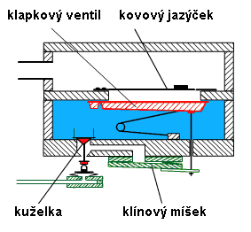
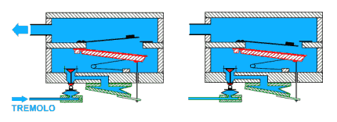
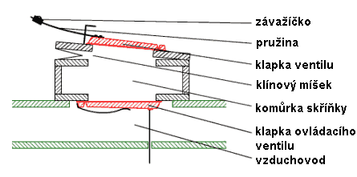
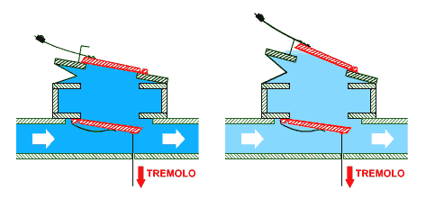
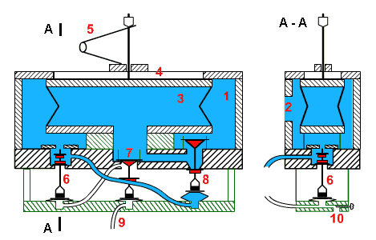
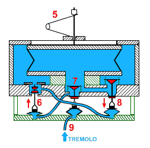
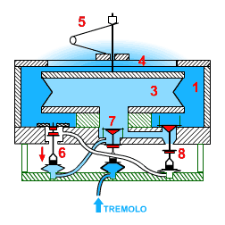
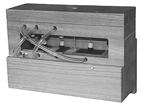
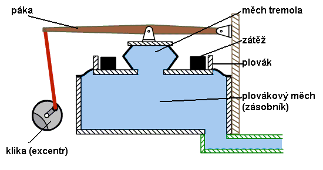
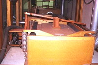

Tremolo (tremulant) je pomocné zaøízení, které pomocí cyklického rozkolísání tlaku vzduchu pro píš�aly zpùsobí shodné „rozhoupání“ zvuku nástroje nebo jeho èásti – tremolování (obdoba vibrata u strunnıch nástrojù). Tremolo nenajdeme ve všech varhanách, chybí u malıch a historickıch nástrojù. Rozkolísání tlaku se tıká samozøejmì jen vzduchu pro ozev píš�al, tlak vzduchu napø. pro pneumatickou trakturu musí zùstat konstantní. Tremolo mù�e pùsobit na celı nástroj (generální) nebo jen na vybranı stroj (manuál), pak tento stroj musí mít samostatnı mìch a regulátor tlaku vzduchu (více v kapitole o vzduchovém hospodáøství), vıjimeènì se setkáme s tremolem pro jeden hlas (pouze v nástrojích se vzdušnicí s rejstøíkovımi kancelami, u nich� lze tremulant nechat pùsobit jen na jednu kancelu). Tremola mohou pracovat na více principech, základní dìlení tremulantù podle typu pùsobení na vzduchovı systém varhan - tremola vıpustná (vypuštìním vzduchu z agregátu zpùsobí chvilkovı pokles tlaku), tlaková (stlaèením napø. míšku zpùsobí chvilkovı vzestup tlaku) a kanálová (pohybujícím se prvkem v cestì vzduchu ovlivòují okam�ité tlakové pomìry pøed a za pøeká�kou). Vıška tónu píš�aly je silnì závislá na tlaku vzduchu proto musí bıt
tlak vzduchu v nástroji konstantní a dobøe stabilizovanı nezávisle na
odbìru. Pøi jeho zvıšení se zvyšuje i vıška znìjícího tónu (jen v urèitıch
mezích, pøi pøekroèení jistého tlaku píš�ala „pøefoukne“ o kvintu èi
oktávu vıše) a naopak pøi sni�ování tlaku tón klesá. Jsou-li tyto zmìny
tlaku cyklické, stejnì cyklické je i mírné rozlaïování v vzniká tremolo.
Musíme ještì odlišit tremolo od obdobnì znìjícího chvìní zvuku u tzv.
„vıchvìvnıch“ rejstøíkù. U nich je efekt vibrování dùsledkem interferencí
zvukovıch vln, generovanıch dvojicí píš�al s mírnì odlišnou vıškou tónu
(frekvencí) pro ka�dı tón. Tyto rejstøíky pou�ívají dvì øady (sbory)
stejnıch píš�al, z nich� jedna je ladìna o nìkolik centù odlišnì (zpravidla
vıše) oproti základní. Teprve slo�ením zvuku z tìchto dvou øad vzniknou
slyšitelné vibrace, tento efekt však s tremolem nemá nic spoleèného.
|
Princip
èinnosti tremulantu si uká�eme nejprve na kanálovém tremolu pro jeden
hlas. Jedná se o malé zaøízení, zpùsobující kolísání tlaku malého mno�ství
vzduchu v rejstøíkové kancele pøíslušného hlasu. Konstrukènì se jedná
o døevìnou skøíòku, rozdìlenou vodorovnou pøepá�kou na dvì èásti. Ve spodní
èásti je stlaèenı vzduch s konstantním tlakem. V pøepá�ce je otvor, kterı
je v klidovém stavu pøekryt klapkou ventilu. Ventil je ovládán pneumaticky
pomocí klínového míšku a ku�elky relé ve dnì skøíòky (ku�elku by šlo samozøejmì
ovládat i mechanicky èi elektromagnetem). |
Souèást zpùsobující pravidelné cyklické kolísání tlaku vzduchu je ukryta v otvoru pøepá�ky nad ventilem a je pøímo v cestì vzduchu od zdroje (zásobníku, mìchu) ke spotøebì (vzdušnici, píš�alám). Je to pru�nı kovovı pásek – jazıèek, upevnìnı v kovovém rámeèku. Otvor v rámeèku je nepatrnì vìtší, ne� samotnı jazıèek, umo�òuje tak pohyb jeho volného konce ve svislém smìru (nahoru i dolù – prùraznı jazıèek): |
V klidovém stavu je jazıèek v rovinì s rámeèkem,
tak�e prakticky pøekrıvá jeho otvor a brání prùchodu vzduchu. Otevøeme-li
ventil pod jazıèkem, pøetlak vzduchu z komory v dolní èásti skøíòky jej
vychılí do horní polohy. V této poloze jazıèek díky své pru�nosti a záva�í
na volném konci setrvá jen velmi krátce, vrátí se do vıchozí polohy a
setrvaèností pøekmitne v opaèném smìru. V okam�iku maximální vıchylky
nahoru èi dolù proudí kolem jazıèku vzduch dále smìrem k pøíslušné kancele.
Tuto situaci zachycují následující nákresy: |

V okam�iku prùchodu jazıèku støední polohou tlak
vzduchu prudce poklesne, pøi jeho vychılení naopak stoupne. Kmitáním jazıèku
tak vzniknou právì �ádoucí cyklické zmìny charakteristické pro tremolo.
Frekvence kmitání je závislá na vlastnostech jazıèku (pru�nosti a velikosti
pøidaného záva�í). Èinnost zaøízení tremola pro jeden hlas (zpomalenì!)
pøibli�uje následující animace: |
V popsané konstrukci se tremolo zapíná pomocí nadzvednutí
ku�elkového ventilu ve dnì skøíòky. Pøes tento ventil se naplní klínovı
míšek a ten otevøe klapku ventilu pod jazıèkem. Nadzdvi�ení ku�elky zpùsobí
akèní èlen traktury (míšek, páka, elektromagnet), øídicím èlenem bude
ovládací prvek na hracím stole, oznaèenı jako „tremolo pro hlas…“, tedy
napø. Tremolo Flétna 8‘, Tremolo Gamba 8‘. Na hracím
stole samozøejmì najdeme i ovládací prvky pro zapnutí tìchto rejstøíkù
bez tremola - Flétna 8‘ a Gamba 8‘, hlas tak lze pou�ít buïto
bez tremola èi s tremolem. Zùstanou-li zapnuty oba rejstøíky souèasnì
(hlas i tentı� hlas s tremolem), efekt tremola se neprojeví, vzduch o
stabilním tlaku pøímo z mìchu nedovolí rozkolísání tlaku tremulantem,
kterı navíc pøi shodném tlaku nad a pod jazıèkem nebude fungovat. Tento
typ tremulátoru pùsobí jen na jeden hlas, je-li v nástroji hlasù s tremolem
tohoto typu více, má ka�dı svùj samostatnı tremulant. |
Dále popisované typy tremulantù mohou pùsobit na vìtší poèet hlasù, celı stroj èi nástroj (generální, sborové, kolektivní). Abychom zajistili pùsobení tremulantu izolovanì na jednu vzdušnici, musí mít tato vzdušnice samostatnı mìch s regulátorem tlaku (pøípadnì i se samostatnım ventilátorem, není to ale podmínkou) nebo mít alespoò samostatnı pøívod vzduchu (vìtev vzduchovodu) pøímo z hlavního mìchu (tím je zajištìno �ádné èi minimální ovlivnìní tlaku pro ostatní vzdušnice, které následnì eliminují napø. vyrovnávací mìchy – amortizéry – viz. popis vzduchového hospodáøství). V závislosti na konkrétní konstrukci se pak tremulant nachází buï na vzduchovodu ke vzdušnici nebo je souèástí mìchu, ze kterého je vzdušnice zásobována vzduchem nebo (u souèasnıch konstrukcí) je konstrukènì spojen s vyrovnávacím mìchem (amortizérem – více opìt v kapitole o vzduchovém hospodáøství). Zapnutí tremola tohoto typu zpùsobí odpovídající rozvibrování horní (volné) desky mìchu, ze kterého je pøíslušná èást nástroje napájená vzduchem, kolísání tlaku tak pùsobí na všechny hlasy daného stroje souèasnì a stejnì (stejnou frekvencí). Generální tremolo (pùsobící na celı nástroj) najdeme vìtšinou jen u malıch nástrojù. Tím, �e pùsobí úplnì na všechny hlasy nástroje souèasnì je jeho vyu�ití pøi høe nìkdy problematické, nelze napø. odlišit hranou melodii a doprovod. Jedna z konstrukcí tremulantu je zalo�ena na vyu�ití klínového míšku s klapkovım ventilem v pohyblivém víku. Míšek je souèástí malé skøíòky, tvoøící vzduchovou komùrku, která je pøipevnìna pøímo na vzduchovodu k pøíslušné vzdušnici. Komùrka ve skøíòce je se vzduchovodem spojena pøes otvor, kterı je v klidu pøekryt klapkou ventilu, kterım se celé zaøízení ovládá: |

Pøi vypnutém tremolu vzduch s konstantním tlakem ve vzduchovodu proudí pøímo od mìchu ke spotøebì ve vzdušnici. Zapneme-li tremolo, traktura otevøe ventil ve dnì komùrky, vzduch ze vzduchovodu ji naplní a nadme míšek. V jeho víku je další ventil, k jeho� klapce je pøipevnìna pru�ina se záva�ím, které je pohyblivé a lze jím v urèitıch mezích regulovat frekvenci vibrací. Následující ilustrace zobrazují dvì fáze èinnosti tremulantu. Víko míšku se tlakem vzduchu zespod rychle zvedá a� do polohy, ve které narazí na omezující zará�ku. Tím se jeho pohyb zastaví, dále v nìm však stoupá tlak. Ten po chvíli nadzvedne klapku ventilu (napomáhá tomu i setrvaènost pohybu záva�íèka na pru�inì) a vzduch zaène unikat pøes ventil (druhá fáze): |

Únik vzduchu zpùsobí pokles tlaku v míšku, komùrce i propojeném vzduchovodu (a v souvislosti s tím i ve vzdušnici, tón zvuku píš�al mírnì poklesne). Díky ni�šímu tlaku poklesne i víko míšku, po chvíli díky tíze záva�íèka (a kmitu, zpùsobeného pru�inou) klesne i klapka ventilu a uzavøe otvor míšku. Tím se celá soustava opìt tìsnì uzavøe, tlak stoupne (a tím stoupne i vıška tónu píš�al). Míšek se opìt nadme (první fáze) a celı dìj se cyklicky opakuje. Rychlost opakování (frekvenci kmitù) lze regulovat pohybem záva�íèka po pru�inì, pøiblí�ením k ventilu (zkrácením ramena pohybu) se frekvence zvıší, oddálením naopak sní�í. Pru�ina je klíèovı prvek tohoto tremulantu, oznaèuje se èasto jako pru�inovı a øadíme jej mezi vıpustná tremola ("upouští" vzduch ze systému). Tento tremulant je konstrukènì jednoduchı a spolehlivı, jeho nevıhodou je ponìkud vyšší hluènost pøi chodu (nará�ení víka míšku na doraz a klapání ventilu se záva�íèkem se projeví jako charakteristické tupé rány, které jsou slyšitelné i pomìrnì daleko od nástroje). |
Další konstrukcí je pneumatické tremolo, vyu�ívající
stlaèenı vzduch pro pohon agregátu, vytváøejícího oscilace tlaku. Èinnost
pneumatického agregátu je ponìkud tišší, ne� èinnost pøedchozího øešení
s míškem a klapkovım ventilem, jeho konstrukce je však podstatnì slo�itìjší,
(v podstatì se jedná o pneumatickı multivibrátor). Na následujícím obrázku
je øez tímto agregátem (vlevo v podélné rovinì, vpravo pøíènı) v klidovém
stavu (vypnuté tremolo). Zaøízení se zapíná nadzvednutím ku�elkového ventilu
7, o které se zde postará míšek, plnìnı rourkou 9 pneumatické traktury
(tuto ku�elku lze u jiného typu traktury ovládat i mechanicky èi elektromagnetem
bez vlivu na funkci agregátu): |

Celé zaøízení tremulantu je spojeno se vzduchovodem pøes otvor 2, kterı pøivádí stlaèenı vzduch do vnitøního prostoru skøíòky (komùrky 1). V komùrce je rovnobì�nı míšek (typ mìchu, u nìho� jsou dno a víko v rovnobì�né poloze v celém rozsahu pohybu viz popis mìchù). Víko míšku v nadmutém stavu pøiléhá tìsnì k otvoru 4 v horní desce skøíòky (z dùvodu utìsnìní je navíc polepeno mìkkou kù�í èi podobnım materiálem). Souèástí agregátu je i dvojice rourek, pøivádìjících vzduch z komùrek ventilù 6 a 7 k míškùm, které ovládají ventily 6 a 8. V klidovém stavu (vypnutém tremolu) je ku�elka 6 v dolní poloze, rourkou od komùrky této ku�elky je vzduch ze skøíòky agregátu 1 pøiveden do míšku pod ku�elkou 8, ten se nadme a ku�elku nadzvedne. Vzduch ve skøíòce 1 se tak dostane dovnitø velkého míšku 3. Tlaky vzduchu uvnitø a vnì tohoto míšku se tedy vyrovnají a pomocná pru�ina míšek natáhne. Jeho horní víko se pøitiskne k otvoru ve víku skøíòky 4 a uzavøe jej. Napìtí pru�iny je mo�né regulovat pomocí regulaèní matièky (oøíšku). V tomto stavu agregát setrvá a� do zapnutí tremola. |
Tremolo
se uvádí do èinnosti tlakovım impulsem v rource 9 (vpuštìní vzduchu do
rourky zajistí øídicí èlen traktury v hracím stole, tento okam�ik zachycuje
obrázek napravo). Míšek na konci rourky se nadme a nadzvedne ku�elku ventilu
7, èím� vpustí vzduch ze skøíòky do rourky k míšku pod ventilem 6. Tento
ventil je dvojitı – jeho nadzvednutím se souèasnì uzavøe pøívod vzduchu
do míšku 8 a umo�ní se jeho vypuštìní do okolí. Míšek splaskne a ku�elka
8 poklesne. |
Situaci
po poklesu ku�elky 8 zachycuje obrázek nalevo. Ku�elka uzavírá pøívod
vzduchu do velkého míšku 3 a souèasnì s ní spojenı kontraventil otevírá
otvor, kterım vzduch z míšku unikne do okolí (opìt vıpustnı systém). Rozdíl
tlakù uvnitø a vnì míšku zpùsobí jeho splasknutí a pokles horního víka,
které odkryje otvor 4 v horní desce skøíòky agregátu. Stlaèenı vzduch
ze skøíòky proudí tímto pomìrnì velkım otvorem rychle ven a tlak ve skøíòce
a souèasnì v pøipojeném vzduchovodu prudce poklesne.
|
Pokles tlaku uvnitø velkého míšku 3 souèasnì zpùsobí pokles tlaku v malém míšku, kterı udr�uje ku�elku ventilu 6 v horní poloze, ta tedy poklesne a vpustí vzduch ze skøíòky 1 do míšku pod ku�elkou 8. Míšek se nadme, nadzvedne ku�elku 8 a vpustí vzduch ze skøíòky do velkého míšku 3. Tlaky uvnitø a vnì se vyrovnají, míšek se nadme, jeho víko se pøitiskne k otvoru v horní desce skøíòky 4 a uzavøe jej, tlak ve skøíòce se tak rychle vrátí k pùvodní hodnotì tlaku ve vzduchovodu. Vzduch proudící do míšku 3 se rourkou dostane i k míšku pod ventilem 6, ten se nadme, nadzvedne ku�elku ventilu a celı dìj se cyklicky opakuje, dokud se tremolo nevypne pomocí ventilu 9. Celı cyklus trvá zlomek sekundy a jeho opakováním se docílí rozkolísání tlaku ve vzduchové soustavì nástroje (rozvibrování horní desky pøíslušného mìchu a tremolování zvuku píš�al). Frekvenci kmitání lze nastavit zmìnou napìtí pru�iny 5 a rovnì� šktícími šroubky 10 v rourkách pod míšky ventilù 8 a 7 (jejich umístìní je zachyceno na pøíèném øezu na prvním obrázku agregátu). Tyto šroubky regulují velikost vıpustnıch otvorù pod míšky, jejich zašroubování urychluje naplnìní míšku a zpomaluje jeho vyprázdnìní a naopak (podrobnìji v kapitole o komponentech pneumatické traktury). Regulaèní šroubek má i støední ventil 9 pro ovládání celého agregátu, jeho seøízení však nemá vliv na frekveci. Pro správnou funkci agregátu je tedy nutné správnì seøídit tøi (plus jeden) regulaèní prvky, zmìna frekvence tremola je tak pomìrnì obtí�ná a není mo�né ji regulovat napø. z hracího stolu (to umo�òují jen elektronické agregáty). Pro snazší pochopení funkce agregátu je jeho èinnost zachycena na následující animaci. Dìj je zpomalen (skuteèná frekvence kmitù je cca 5 Hz) a navíc jej mù�ete v kterékoliv fázi zastavit pomocí tlaèítka se symbolem pauzy: |
Skuteènı
vzhled pneumatického tremulantu ukazuje tato fotografie (provedení je
od pøedchozích ilustrací a animace mírnì odlišné, konstrukce pou�ívá o
jednu soupravu míškù a ventilu navíc). Dobøe jsou viditelné plastové kondukty
a regulaèní šroubky pod míšky. Volnı otvor pod tøetím míškem zleva je
urèen pro kondukt, kterım bude pøiveden ovládací vzduch (impuls k zapnutí
a vypnutí od hracího stolu). |
Další konstrukèní skupinu tremulantù pøedstavují
tremola, pracující na tlakovém principu - kolísání tlaku je dosa�eno pomocí
periodického stlaèování vzduchu (zmìny objemu) ve vzduchové soustavì nástroje
(pøíslušného stroje). Mo�nıch øešení je nìkolik, tremulant mù�e bıt souèástí
amortizéru (pracuje inverznì k jeho funkci - amortizér brání kolísání
tlaku zatímco tremulant jej zpùsobuje, po dobu èinnosti proto musí bıt
amortizér zablokován nebo pøímo vyu�it k tremolování mechanickım rozvibrováním
volné desky jeho mìchu - viz kapitola o vzduchovém
hospodáøství) nebo pøímo mìchu (zásobníku, regulátoru tlaku). Na následujícím
obrázku je øez zásobním mìchem s tremolem: |

Na plováku mìchu je pøipevnìn menší míšek, spojenı pøes pohyblivou páku a táhlo s otáèivım excentrem (klikou). Excentr je pohánìn elektromotorem èi vzduchovou turbínkou. Pøi jeho roztoèení táhlo periodicky pohybuje pákou ve svislém smìru, s pákou spojená horní deska mìchu tremulantu tento pohyb sleduje a zpùsobuje jeho cyklické stlaèování a natahování. Mìch tremola je otvorem ve dnì spojen pøímo s hlavním zásobníkem - vnitøním prostorem mìchu (regulátoru tlaku) nástroje. Zmìny objemu mìchu tremola se pøenesou na cyklické zmìny tlaku vzduchu v zásobníku a tím i celého nástroje (pøíslušného stroje, pokud má tento mìch jen sám pro sebe). Horní deska zásobníku se pohybuje vùèi mìchu tremola protismìrnì, vzrùst tlaku v mìchu ji nadzvedává. Tato konstrukce je pou�itelná jen u plovákového mìchu, u kterého je svislı pohyb horní desky (plováku) omezen jen na krátkou dráhu, danou velikostí záhybu (ko�eného límce mezi skøíní mìchu a plovákem viz popis plovákového mìchu). Skuteèné provedení tremulantu ukazuje fotografie, od nákresu se liší jen pou�itım plovákovım mìchem s pru�inami místo zátì�e, vlevo je vidìt motor s øemenem, pohánìjící excentr. Pomocnı míšek na víku mìchu lze zcela vynechat a nechat páku pùsobit pøímo na plovák mìchu, pak ale spojení páky s excentrem musí bıt pru�né (napø. vinutou pru�inou) nebo musí bıt odpru�ení vlo�eno mezi páku a plovák, v pøípadì pevného spojení by byla narušena regulaèní funkce mìchu (volná pohyblivost plováku). Celé zaøízení v pohybu (zpomaleném) ukazuje následující animace: |
|
Mo�nıch konstrukcí tremola je celá øada, v souèasné dobì se stále èastìji pou�ívá tremulant, u nìho� je generátorem øídicího kmitavého signálu elektronika, lze tak nastavovat jednoduše kmitoèet vibrací a pøípadnì i hloubu rozkolísání zvuku ovládacími prvky pøímo na hracím stole. Elektronicky generované kmity jsou pak napø. dvojicí elektromagnetickıch ventilù, tyèovım elektromagnetem èi elektromotorkem pøevedeny na odpovídající pohyb víka mìchu, kterı jej dále pøevede na kolísání tlaku vzduchu. Historicky starší konstrukce ke vzniku vibrací nepou�ívají elektroniku, ale "pouze" mechanické a pneumatické komponenty. Vıslednı efekt je shodnı, jen „komfort“ ovládání je ni�ší, vlastnosti tremulantu (napø. frekvence kmitání) jsou dány jeho konstrukcí a jejich zmìna je mo�ná jen v omezené míøe varhanáøem pøímo v nástroji. |
Tremolo je pomocné zaøízení, které
je pøímou souèástí vzduchové soustavy varhan. Na souvisejících stránkách
najdete popis vzduchového hospodáøství,
jednodílnıch a dvoudílnıch
mìchù a elektrického ventilátoru. |
Poznámka: Tato stránka je souèástí Anatomie varhan ®, © Ing. Petr Bernat. Animace © Konrad Zacharski a Ing. Petr Bernat.